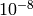

PreCalc¶
Note
George, please improve! My interpretations also need to be checked...
- PRECALC
- Start pre-calculation block. This chooses which weighting parameters to use in Monte Carlo calculation , in order to give minimum variance. This is an optional input block, and is not required if the default parameters are to be used, or are specified explicitly in the CALC input block. Currently, only the IMPORTANCE parameter, the C EXCITWEIGHTING parameter, and the a & b optimal parameters are searched for simultaneously, optimised and parsed through the the main program.
[PreCalc options—see below.]
- ENDPRECALC
- End the precalc input block.
PreCalc Options¶
Note
George: What on earth are the following:
- A,B etc parameters.
- U matrix.
- VERTEX [HDIAG RHODIAG] [SUM MC]
Similar to the methods section in the CALC block, specify the method to use at the next vertex level (the first entry is for the second vertex level) in searching for the best parameters, using the hamiltonian matrix diagonaltisation (HDIAG) or the
 matrix diagonalisation (RHODIAG). After this is specified, on
the same line, specify whether to calculate the expected variance
using the full sum at this vertex level (SUM), or using a Monte
Carlo sum (MC).
matrix diagonalisation (RHODIAG). After this is specified, on
the same line, specify whether to calculate the expected variance
using the full sum at this vertex level (SUM), or using a Monte
Carlo sum (MC).Currently, only the HDIAG routine works when performing a MC expected variance, though the diagonalisation of the rho matrix now works with the full sum.
For example:
VERTEX HDIAG SUM XXX XXX VERTEX HDIAG MC XXX
where XXX are the vertex options (see below).
If no further options are specified for a given vertex level, the optimum values of all the EXCITWEIGHTING variables will be found, but not used in the main program.
- GRIDVAR [A_ExcitFromStart] [A_ExcitFromEnd] [A_ExcitFromStep] [B_ExcitToStart] [B_ExcitToEnd] [B_ExcitToStep]
- Produce a 3D map of the variance landscape, but do not explicitly calculate the minimum. Vaules for the A parameter start, end, and step must be specified, followed by the same for the B parameter.
- LINEVAR [G_VMC_PIStart] [G_VMC_PIEnd] [G_VMC_PIStep]
- Same as GRIDVAR, but produce a 1D line for one variable - currently only working for the IMPORTANCE parameter and the U-matrix element parameter. Shows change in expected variance over the designated range of values.
- MEMORISE
All the graphs, their excitation generators, weights, energies, and unbiased probabilities should be stored in the memory. Speeds up the calculation of the variance by around twofold. However, this cannot be used for large systems. ~31000 4v graphs, or 22000 3v graphs was the maximum for the nitrogen dimer with the VQZ basis .
Currently only available for MC precalculations. If this is not set, then only the first node excitation generators are stored—there should be enough memory for this
- PREGRAPHEPSILON [PREWEIGHTEPS]
Default .
Gives the threshold above which the weight of a graph must be if they are to be included in the full precalc variance calculation.
If the graph weight is below the threshold, then the probability of obtaining the graph does not need to be calculated, and so the optimisation routine is faster (but less accurate) at higher thresholds.
- TOTALERROR [Desired Error from main calculation]
Calculates the required number of cycles so that the final error from the Monte Carlo calculation is equal to the error specified.
Only valid if the highest vertex level in the precalculation stage is the same as the highest vertex level in the main MC calculation, i.e. the highest MC vertex level is independently optimised.
The optimum vertex splitting is also calculated.
- TOLERANCE [TOLERANCE]
Default 0.1.
The fractional precision to which the optimum parameter is obtained, using the minimisation method.
- TRUECYCLES [No.of cycles]
Specify the total number of MC cycles that we want to use in the main calculation. The precalculation stage will then automatically split the cycles between the vertex levels in the main calculation, according to how the use statements indicate the parameters are to be split.
The cycles are then split so to best minimise the overall variance of the run, assuming that the variance of the whole run is simply the sum of the variances of the individual vertex results.
Vertex options¶
For the specified vertex level:
- CYCLES [nCYCLES]
Specify the number of graphs generated in the MC algorithm for each expected variance calculation in the parameter minimisation algorithm.
Applies only to a vertex level which evaluates the expected variance using the MC algorithm in the VERTEX line.
- NONE
- Perform no calculations or optimisations.
- UEPSILON [UEPSILON]
Default UEPSILON is 0.
Find the optimum C EXCITWEIGHTING coefficient and pass through to the main program, unless setting C to be zero changes the expected variance by an amount less than UEPSILON, in which case C is set to be zero.
The calculation of the U matrix elements can be time-consuming in a real MC simulation, yet can have a negligible effect on the final result. In these cases, setting the C coefficient to be zero makes the full MC simulation much faster.
With the the default value of UEPSILON, the optimum value of C will always be used in the main program.
- FINDC
Find the optimum C EXCITWEIGHTING parameter.
The C EXCITWEIGHTING parameter. will only be found if this flag is set, or if a UEPSILON is set.
By default, the optimisation algoritm will only seek to find the values which give the minimum expected variance by varying the A and B EXCITWEIGHTING parameters, (or the parameters in the weighting scheme specified).
- FINDD
- Find the optimum D EXCITWEIGHTING parameter for this vertex level (g_VMC_ExcitToWeight2).
- USED
- Pass the optimum D EXCITWEIGHTING parameter found at this vertex level through to the main calculation.
- FINDIMPORT
Run the optimisation algorithm for the IMPORTANCE parameter.
The optimised value will be found printed out, but will not be passed through to the main calculation.
Can only be set for vertex levels of three or higher for obvious reasons.
Note
And the obvious reasons are?
- USEIMPORT
Find the optimal IMPORTANCE parameter, and use in the main calculation.
As for FINDIMPORT, can only be set for vertex levels of three or higher.
- USE [MC_VERTEX_LEVEL_1] [MC_VERTEX_LEVEL_2] ...
Use in the main calculation the parameters calculated from the specified precalc vertex levels, rather than any other, are to be passed through and used in the main program when performing a MC at one of the vertex levels specified. Any given vertex level can only be specified once in all the USE statements.
Vertex levels in the main calculation which are not specified in one of the precalc USE statements, will use the parameters which are given in the CALC block of the input file.
A USE statement on its own will only calculate the A and B EXCITWEIGHTING parameters (or any of the other weighting scheme parameters specified) and use them for all MC vertex levels in the main calculation, unless FINDC or UEPSILON is specified, in which case for the C parameter to also be used.
Note
This is somewhat confusing. How does it fit in with USEIMPORT etc.?